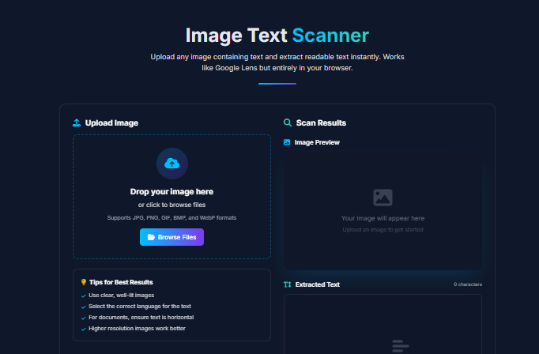

Image Text Scanner

Image Text Scanner
A Google Lens-inspired web application that extracts text from images using Optical Character Recognition (OCR) technology. The tool allows users to upload images and instantly extract readable text, similar to popular mobile scanning apps.
Designed with a focus on user experience, the application features a clean dual-panel interface, real-time processing feedback, and multiple text management options. All processing happens client-side for enhanced privacy and speed.
Built With
Key Features
-
Multiple Upload Methods
Drag & drop, file browser, or click to upload images
-
Multi-language OCR
Supports English, Spanish, French, German, Japanese, Korean, and Chinese
-
Real-time Preview
See uploaded image and extracted text side-by-side
-
Text Management
Copy, download, or clear extracted text with one click
-
Client-side Processing
All processing happens in your browser for maximum privacy
Practical Applications
Document Digitization
Convert printed documents, receipts, or business cards into editable text
Screenshot Extraction
Extract text from screenshots for notes, quotes, or information sharing
Study & Research
Extract text from book pages, research papers, or study materials
Language Translation
Extract foreign text from images for translation purposes